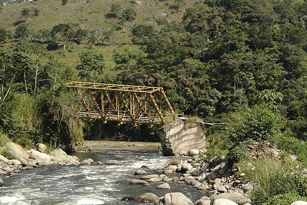

Estación Pereira
Centro Histórico, Pereira


Descripción
La Estación Pereira es un importante hito histórico y cultural de la ciudad. Actualmente convertida en un moderno centro comercial que conserva su arquitectura original, representa la perfecta fusión entre el pasado y el presente de la ciudad. Este espacio histórico renovado ofrece una experiencia única de compras, gastronomía y entretenimiento.
Características
- üèõÔ∏è Edificio hist√≥rico
- üõçÔ∏è Centro comercial
- üçΩÔ∏è Zona gastron√≥mica
- üì∏ Arquitectura colonial
- üé≠ Eventos culturales
- üö∂‚Äç‚ôÇÔ∏è Zona peatonal
- üè™ Tiendas variadas
Horarios y Precios
Horario:
9:00 AM - 9:00 PM
Días:
Todos los días
Entrada:
Gratuita
Restaurantes
-
TierraMar
- Cocina caribeña y mariscos
- Ubicación: Centro Comercial Estación Central, piso sótano
- Pescados frescos
-
Babilonia 1892
- Bar-bistró
- Platos internacionales
- Ubicación: A 190 metros del Centro Comercial
-
Fruta al Paso
- Opciones saludables
- Jugos naturales y ensaladas
- Ubicación: A 170 metros del centro comercial
Alojamientos cercanos
-
Hotel Soratama
- Ubicación: A menos de 100 metros
- Habitaciones modernas
- Servicios completos
-
Movich Hotel de Pereira
- Hotel 5 estrellas
- Piscina y spa
- Distancia: 800 metros
-
Hotel GHL Abadía Plaza
- Ubicación: Centro de Pereira
- Ideal para negocios
- Servicios premium